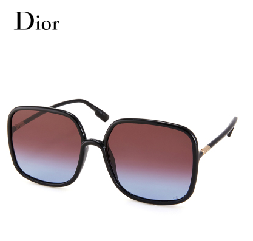

올해는 아이웨어에 미쳐서(.....) 계산해보니 총 8개를 질렀습니다;;;;;
1월 마르니 안경
2월 영국&아이슬란드 여행갈때 면세점에서
비비안웨스트우드 & 구찌 선글라스
4월
구찌 헥사곤 프레임 안경
6월
클로에 안경
구찌 선글라스
9월 홍콩여행
카린 안경
위에 리스트중 가장 활용도가 높은건 마르니 안경이고
올해 잘한일은 변색렌즈를 맞춘것
너무 편합니다 :D 대신 렌즈를 껴야하는 선글라스를 잘 안쓰게 되는 단점이 있군요;;
그리고 1월말 전 방콕여행을 가고 잽싸게 면세점에서
요걸 질렀지요 ㅋㅋㅋㅋㅋㅋㅋㅋㅋ

디올 선글라스
저 사각프레임이 마음에 들어서(......)
플러스 아직도 미련을 못버린 젠몬을 하나 인천공항 면세점에서 구매할지 고민중입니다;;;;
뭐하나 꽂히면 마지막에 마지막까지 최선을다해 질러대서 큰일이에요 ㅠㅠ
2019년 교훈
아이웨어는 인터넷면세가 짱이라능!!
2019년 잘산 물건
정샘물 쿠션 - 시세이도와 번갈아 사용할듯 합니다.
지미추 플랫 - 너무너무 가벼움 ;ㅂ; 최고!
비비안웨스트우드 로만쓰리스트랩 - 올해 버클발레리나도 구매할려하니까 솔드아웃......OTL
루이비통 스피디 반둘리에 25 - 가볍고 많이들어가고 편하고 좋습니다.
그리고 디자인이 너무 마음에든
JI WON CHOI 아디다스 자켓 & 수영복 :)
수영복 아직 개시못했는데 1월말 방콕가서 입을겁니다
요거 기다리면서 노동하고있어요 ㅋㅋㅋㅋ
&
북꼬씨와의 야매독서모임에서 읽은 책 리스트
01.치킨에 다리가 하나여도 웃을 수 있다면
02.맥파이 살인사건
03.철학은 어떻게 삶의 무기가 되는가
04.쇼룸
05.나는 내가 죽었다고 생각했습니다
06.여자 둘이 살고 있습니다
07.힘 빼기의 기술
08.나는 내 파이를 구할 뿐 인류를 구하러 온 게 아니라고
09.아침에는 죽음을 생각하는 것이 좋다
10.그놈의 소속감
11.선량한 차별주의자
12.정치적 올바름에 대하여
13.민주주의는 회사 문 앞에서 멈춘다
14.여자로 살아가는 우리들에게
15.일의 기쁨과 슬픔
이중 마음에 든 책은
철학은 어떻게 삶의 무기가 되는가 / 아침에는 죽음을 생각하는 것이 좋다
선량한 차별주의자 / 정치적 올바름에 대하여
공연/전시/여행 후기는 네이버에 올리는데
2019년
26개의 공연 / 21개 전시관람 / 여행 6 번을 다녀왔더군요
올해도 힘내겠습니다!
2020년에는 좀 더 기록에 힘내보렵니다!! :)